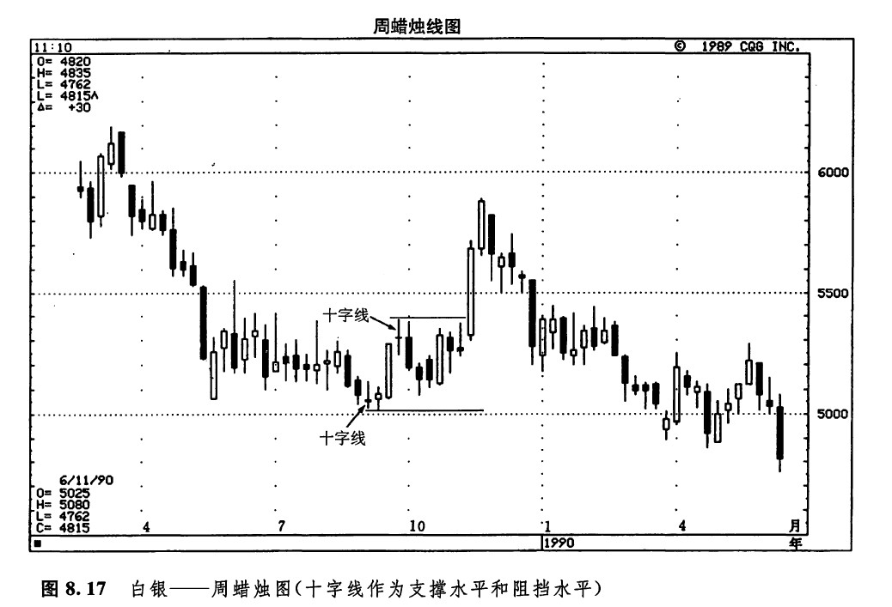
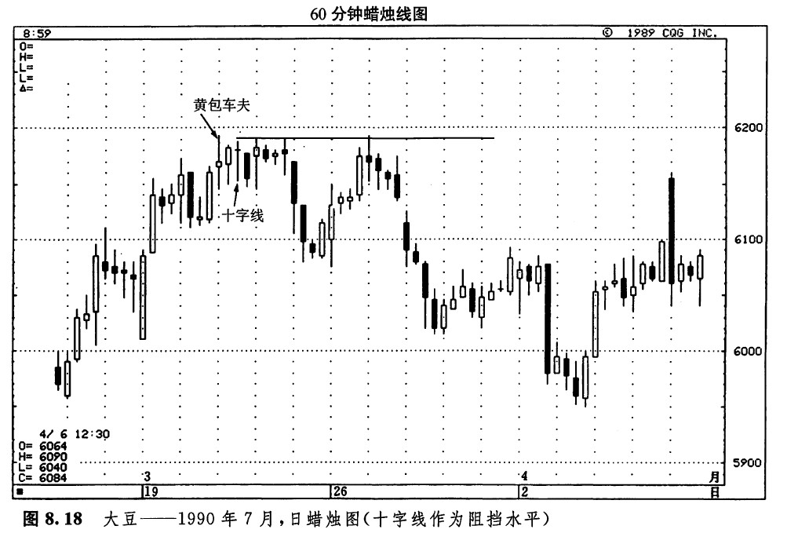

十字蜡烛线有时候可能转化为一个支撑区或一个阻挡区。特别是当它出现在重要的市场顶部或底部的时候，尤其如此。从图8.17我们可以看出，1989年9月的那根十字线的下影线是如何转化为一个支撑区域的。9月底还有一根十字线，它构成了一个市场顶部，后来转化为一个阻挡水平。

如图8.18所示，3月21日的第一个小时形成了一根黄包车夫线（它的实体很小，足以将它归结为一根十字线）。这是一条线索，说明先前的上升趋势可能要反转。几个小时以后，另一根十字线出现了，为上述预期提供了进一步的证据。这两根十字线后来转变为一个重要阳挡区域。
